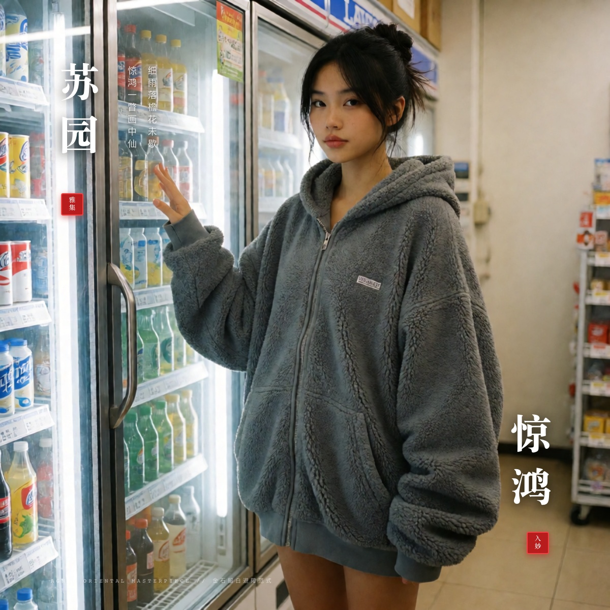
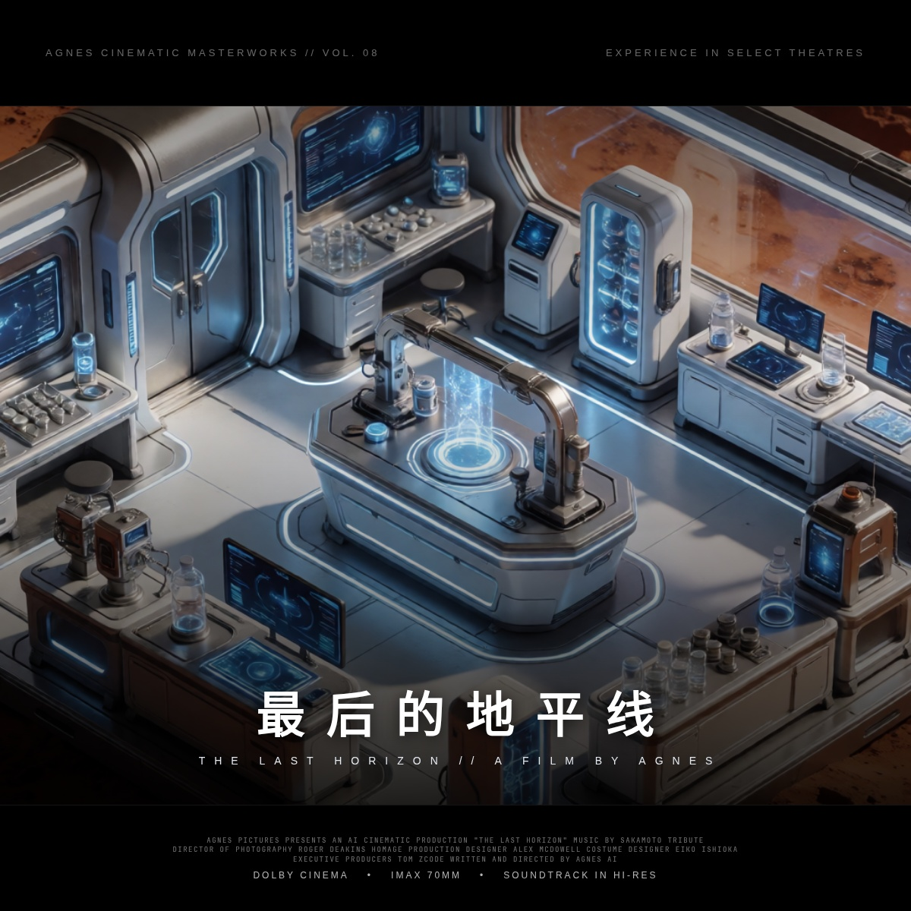
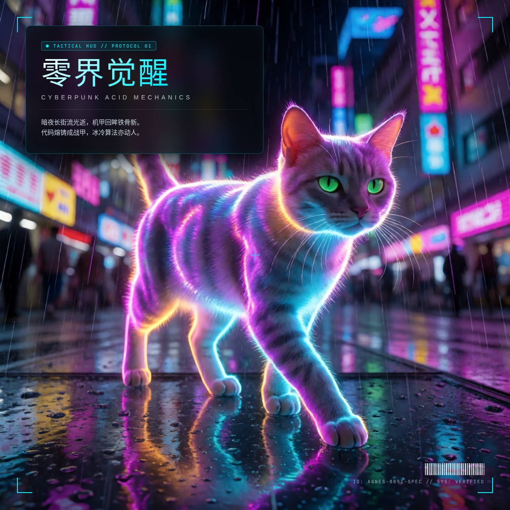
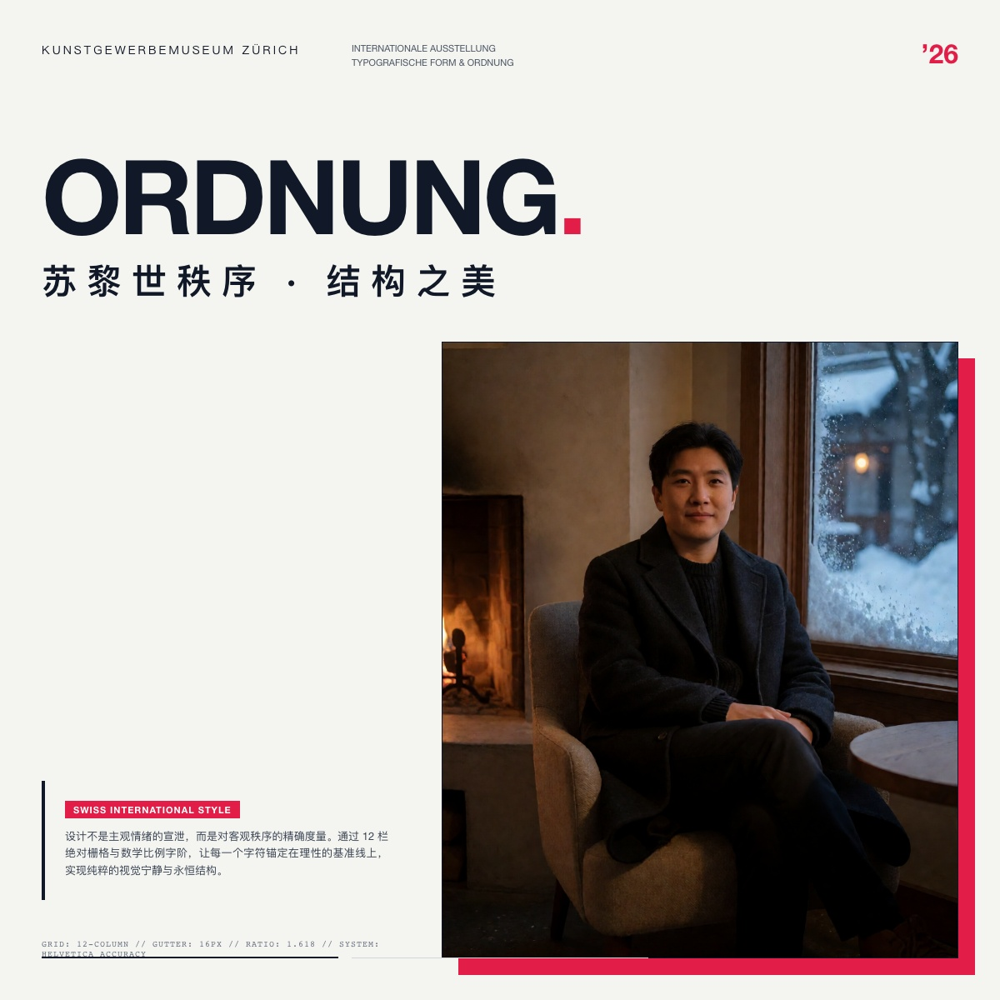

Agnes 多模态高阶数字资产画廊
全量整合25 幅亚洲美人摄影、4 组同一人跨场景角色一致性实测、4 幅全身高级时装立像，以及多流派开源字体海报系列。支持多维交叉筛选、全屏无损微距检视与提示词结构化抽屉。

🔬 实测显微镜：原生乱码 vs 纯净底图对比
左右拖动中央滑块，直观对比生图模型直接写字的拓扑崩溃与提示词纯化去污染后的赛璐珞质感


学 → 拆 → 定 → 做 → 验 · 五步清单
来自 WORKFLOWS / TYPOGRAPHY / 71 Skill 硬约束的合并版。每做一单勾一项。
- □ 标出 T1 主标 / T2 西文 / T3 slogan / T4 微信息
- □ 框出 ≥35% 负空间（大气甜点 45–60%）
- □ 写出色角色（主/辅/强调）
- □ 对照字体性格（黑/宋/楷）
- □ 主体事实：身份/数量/朝向/遮挡
- □ 构图：对角 / 中轴 / 分栏
- □ 字阶比主标:副标 ≈ 8–10:1
- □ 材质：网点/颗粒/纸色/错版
- □ platform / goal / subject / tone
- □ mode：diag · bignews · stack · vertical
- □ 主标 2–4 字 ×2，slogan ≤18
- □ 可选 style_skill: S05…
- □ 商业：cover_pipeline 全流程
- □ 艺术：Skill 硬约束 + Agnes 生图
- □ 净框：无字/无水印/无角标
- □ 中英盘古之白、禁弯引号
- □ 头肩完整、不贴边、不压五官
- □ 无角标小字 / 无水印补丁硬边
- □ 375px 缩略仍可读
- □ 底带无核心信息
示范拆解 · S09 孔版印刷
T1 无巨型主标；视觉主句「terrace / afternoon」两行小打字机字；档案块 NO. 更小——字服从图形。
约 70% 米白纸；主体簇偏右下 ~15%，不贴边。
靛蓝主墨 + 叶绿 + 朱橙点缀；2–3 墨可追溯。
网点/纸纤维/轻微错版；印刷物不是滤镜。
人/椅/花盆来自源图事实，剪影化但可辨。
把 slogan 再压到一行、档案字距再拉开，空纸再多 5%。
- 生图阶段就要留负空间，事后裁不出干净字区
- 显示体配无衬线西文，宋体配衬线西文
- 禁：装饰色块框 / 角标规格小字 / 脏高斯黑影
- 门禁通过 ≠ 视觉通过，必须人工目检
电影感封面与中文字体工程工作坊
旧版「书生六式/八式色块范式」已收敛为高定样本：人物为主体、对角拆字、10:1 字阶、盘古之白、2.35:1 遮幅；无装饰色块框。不合格样张不展示。
📋 需求变量简报（驱动生图 / 字体 / 排版）
ctr 大字报 · story 叠字
product · scenery · none
neo-chinese 新中式 · fresh
xhs 1080×1440





🎬 电影感版式预设
2.35:1 电影遮幅：上下 14% 纯黑；画芯内 T1 对角拆字主标 → T2 宽字距西文 → T3 宋体 slogan → T4 Billing 微排版（10:1）。人物头肩完整、文字不压五官；禁装饰色块框。
按简报填文案；出图走 New API 轮换池；渲染后必须过布局/文案/缩略门禁再交付。
- ★15k chinese-copywriting-guidelines → 盘古 / 全角标点
- ★14k smiley-sans · ★26k LxgwWenKai
- ★881 posterdown · ★410 posterly
- ★1.5k pagedjs · pangu.js
- □ 头部完整 · place 门禁 · Vision 人脸避让
- □ 无粉红/青色装饰框 · 无生图水印
- □ 主标安全区 · 底带无核心信息
- □ 字体 ≤3 · 盘古之白 · 10:1 字阶
- □ PNG-24 + JPEG q92 · 强制目检
⚡ DALL-E 3 JSON → Agnes 智能转译编译器
自动拆解 JSON 参数层级，剔除机械标记，注入物理光学、材质细节与反塑料感约束
🖼️ 生图 Skill 合集 · 71 项（照片风格改造）
全局已装 ~/.config/mimocode/skills/ · 简报字段 style_skill: "S05" · 生图走 New API，禁止 MiMo image_gen


{kind=link}
📚 17 大经验分类与技能标准库（Garden）
系统已全量收敛 ConardLi/garden-skills 沉淀的 17 个大类与高频实操模板
🛠️ 开源生态集成与本地能力面板
工作台深度整合的 5 大本地基础设施，无缝贯通模型路由、代码分析、网络抓取与浏览器接管



🛰️ 系统生命周期哨兵 (Sentinel Hub)
实时追踪本地聚合网关健康、上游 GitHub 模板同步状态与容灾自动化流水线


Project Summary · 图文整合
Agnes Studio · 项目总览
AI 生图（Agnes / New API）+ 真字体后期排版 + 版式系统，专攻「大气 · 高级感 · 电影海报级」。 硬关系：BACKGROUND → TYPE → PERSON（字在人后，被轮廓切断）。

版式系统 L1 · 12 构图
瑞士非对称 / 上字带下图 / 对角张力 / 杂志开窗 / 独主体 / 中轴 / 上文下图 / 巨字极简 · 路径 outputs/layout_variants/L1/


版式 L2 · 中文精修 13–18
人物放大 52–62% · 思源宋真字体 · 竖排书脊 / 横题宽字距 · 英文仅细副行


字在人后 · 金标准对照
BACKGROUND → TYPE → PERSON · 发丝/轮廓切断字形 · 禁止字在人前


核心工作流
- 生图铁律：只走
agnes_gateway.py→ New API，禁 MiMo image_gen / Gemini 生图 - 中文铁律：后期真字体叠字（思源宋 Black / 普惠 / 宋体），禁止扩散模型写汉字
- 字在人后：四段 Prompt（PRIMARY / BACKDROP / LAYER ORDER+切断 / FORBIDDEN）
- 封面闭环：简报 → 人物 → 文字 → 排版 → QA → 目检 → 交付
大气硬指标
- 留白 35–60%（sweet 45%）· 字阶 8–16:1
- 版面 60% 空 / 30% 内容 / 10% 装饰
- 色场主推 greige + cream #F3EDE3；夜景深墨 + cream
- 中文主标思源宋 Black · 西文 Didot / Bodoni
验收约定 · 文档
docs/PROJECT.md